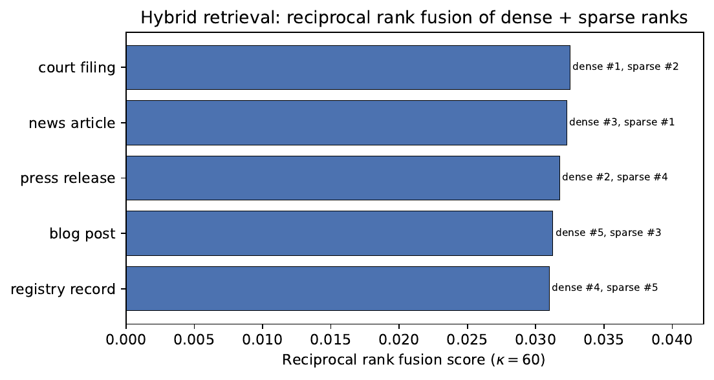

Reporting automation — XBRL, SARs, stress narratives as drafts plus verification.
Governance & audit — why oversight matters as much as the model.
the bigger picture
Compliance is the oldest friction in finance. AI did not arrive on a blank slate —
it walked into a room full of rules written before anyone imagined a neural network.
The whole lecture asks: how do you make a language model useful here without making it a liability?
01
The regulatory landscape for AI in finance
Not too little guidance — too much, in five different vocabularies.
The starting condition
Compliance is the oldest friction in finance
the bigger picture
Long before neural networks, banks employed armies of analysts to read news, cross-reference
sanctions lists, and write suspicious-activity reports. AI entered an environment
already saturated with rules — rules not written with AI in mind.
The challenge is not too little guidance. It is too much. A single LLM for adverse-media
screening must satisfy several regimes at once:
EU AI Act — risk classification & conformity assessment
MiFID II — algorithmic governance & suitability documentation
SR 11-7 / EBA — model risk management expectations
the catch
Each framework uses different vocabulary, evidence standards, and oversight ownership. Satisfying one
does not mean satisfying the others.
EU AI Act · Reg. (EU) 2024/1689
The law sorts every AI system into one of four risk tiers
The first comprehensive horizontal AI law classifies systems by their risk to health,
safety, or fundamental rights — and the tier decides how much you must do.
Tier
Examples
Status
Unacceptable
social scoring, biometric ID
Prohibited
High risk
creditworthiness, insurance (Annex III)
Mandatory requirements
Limited risk
chatbots, emotion recognition
Transparency
Minimal risk
spam filters, recommenders
Unregulated
the critical question for finance: Annex III?
Creditworthiness assessment is explicitly listed. Adverse-media screening that
determines credit / insurance / payment access → high-risk. An LLM that merely
summarises an article for a human analyst → limited / minimal risk.
High-risk = a build spec
Each high-risk obligation maps to a concrete engineering choice
The "high-risk" label is not just paperwork — it dictates how you architect the system.
Seven mandatory requirements, seven build decisions.
Requirement
Engineering implication
Risk management (lifecycle)
drift monitoring, re-validation
Data governance
representative, proxy-free training data
Technical documentation
ex-post reviewable model cards
Automatic logging
audit-trail infrastructure
Transparency to deployers
instructions for use
Human oversight
analyst review-queue UI
Accuracy / robustness / security
benchmarking + red-teaming
Three more regimes for models
MiFID II, Basel III, and SR 11-7 each police the model differently
A quantitative method that applies statistical / economic / mathematical theory to process input
data into quantitative estimates. Three pillars: development, validation, governance.
why LLMs strain SR 11-7
Outputs are probabilistic; internals are not interpretable like a logistic coefficient; behaviour
shifts with prompt reformulation. The FSB (2024) flags "challenges for existing MRM frameworks" and
urges pre-deployment testing, benchmark monitoring, and adversarial-prompt scenario analysis.
GDPR · the data-protection floor
Four GDPR articles bind every LLM compliance pipeline
Article
Constraint on LLM compliance systems
Art. 5 (minimisation)
retain only necessary data — tension with RAG chunks
Art. 9 (special data)
ethnicity, politics, convictions → legal basis: Art. 9(2)(g) (substantial public interest in AML compliance)
right to human review of solely-automated decisions
Art. 22 in practice
A neobank LLM scores A. Petrov at 0.87 (high risk) from articles about a
phonetically similar name in an Eastern-European fraud case, and auto-declines onboarding.
Art. 22 grants Petrov the right to human review, to state his view, and to contest. "Our AI said so"
is not a sufficient explanation — the pipeline must log which articles, passages, and risk
factors drove the score.
02
Anti-money laundering with LLMs
From a 95%-noise alert pipeline to context-aware, agentic screening.
The size of the prize
Money laundering is a trillion-dollar problem we barely catch
the bigger picture
Money laundering moves criminal proceeds through the financial system to obscure their origin. FATF
estimates 2–5% of global GDP (~\(\$\)800bn–\(\$\)2tn) is laundered annually — yet only a
very small fraction of illicit flows is ever seized or frozen.
Why LLMs, why now? The explosion of sources — news, watchlists, beneficial-ownership
registries, court filings, social media — has outpaced human analytical capacity, while regulators
expect comprehensive monitoring.
where value lives
The gap between the obligation (monitor everything) and the capability (limited analysts) is exactly
where LLMs add value. This section: false-positive crisis → agentic screening → RAG architecture →
a quantitative Adverse Media Index.
The 20-year status quo
Keyword screening drowns analysts in false alarms
The dominant paradigm: match name + date-of-birth + nationality against a watchlist, then
flag any fuzzy match above a threshold. The problem is what counts as a "match."
Fuzzy matchers (Jaro–Winkler, Soundex) fire on any vaguely similar string
A name match in isolation carries almost no information
Why noise is dangerous
A flood of false positives makes banks miss the real ones
the cascade
Alert noise trains staff to treat all alerts as noise → genuine matches get cleared without
scrutiny. Banks are fined both for missing laundering and (paradoxically) for generating
excessive low-quality SARs.
the key insight
A name match in isolation is not evidence. What matters is whether the contextual evidence is
consistent with a launderer's profile — exactly what LLMs assess and keyword matching cannot.
The agentic alternative
An LLM agent screens a subject in five autonomous steps
Rather than an analyst querying a database, an agent is handed a subject
and runs a loop — searching, reading, disambiguating, and scoring on its own.
Query formulation — generate searches, including local-language variants
Document retrieval — top-\(k\) articles, filtered by date + source tier
Relevance assessment — same individual? material? credible source?
Evidence extraction — offence type, jurisdiction, date, alleged vs. convicted
The agent searches EN + ES ("corruption", "money laundering", firm name), reads top-\(k\) articles,
disambiguates the individual, extracts structured offence evidence, and emits an actionable risk
report — minutes, not hours.
Design choices: tool selection, memory across steps, error-handling for common-name
collisions. The ReAct loop comes from Lecture 4 (Yao et al., 2022). Ngam (2026) demonstrates a
Perceive–Reason–Act loop that converts regulatory text directly into executable AML
detection features, closing the traceability gap between rules and model outputs.
The architecture underneath
Retrieval-augmented generation in five components
The screening agent rests on a RAG pipeline: ingest documents, store them as searchable
vectors, retrieve the relevant ones, rank them, and format the answer.
Component
Role
Ingestion
chunk 200–400 tok (overlap), embed, store + metadata
Vector store
dense embeddings and BM25; incremental + deletable
Retriever
hybrid search; expand query with alias / transliterations
production constraints
Real-time onboarding: full pipeline <30s (pre-built indices, cached embeddings). Batch re-screening:
latency relaxed, but throughput must scale to millions of records/day.
Combining two kinds of search
Hybrid retrieval: reward documents that two rankers agree on
Dense search captures meaning; sparse search (BM25) captures exact terms like names and
firms. Reciprocal Rank Fusion blends them without learning any weights.
Why fusion is robust
A passage ranked highly by both retrievers is promoted above one that any single
retriever ranks first. RRF rewards cross-signal agreement — the property that makes hybrid retrieval
beat either modality alone on legal / news documents.

Figure. RRF (κ = 60) applied to five candidate passages, each with its dense and sparse retriever rank. The fused order promotes passages ranked highly by both signals above any single-retriever winner.
Source: chapter.tex fig. 11.2, generated by gen_rrf_fusion.py.
Worked numerically in the practical session (gen_rrf_fusion.py / demo.ipynb).
From evidence to a number
The Adverse Media Index turns text into a calibrated risk score
A binary low/high label is too crude. We want a continuous, comparable, trackable score
between 0 and 1 — one that weights serious, recent, credible evidence more heavily.
Calibrated: \(\mathbf{w}\) fit by logistic regression on "subject later a true positive in an enforcement action"
Actionable: the output is a probability → feeds the bank's risk-based customer rating, combined with transaction monitoring + KYC
03
KYC and sanctions screening
One hard problem underneath everything: are these two records the same person?
The central challenge
KYC and sanctions reduce to entity resolution
the bigger picture
KYC and sanctions screening reduce to one hard problem: do two imperfect, multilingual, sparse records
refer to the same real-world entity?
Why it is hard:
Transliteration variance — "Muammar Gaddafi" has dozens of renderings
Name changes — maiden / married / patronymic
Watchlist errors — typos and stale records
Common-name collisions — many people share a name in large populations
How to solve it at scale
Two stages: block fast, then score precisely
You cannot compare every record against every other one. So first cheaply shrink the
candidate set, then run an expensive, accurate model on what survives.
threshold asymmetry
For sanctions, set the threshold for near-100% recall: a missed true hit costs far more than a
false-positive review. LLMs add value by learning transliteration implicitly and resolving ambiguity
from auxiliary context.
Two harder KYC tasks
Finding politically exposed persons and hidden owners
Politically Exposed Persons
Heads of state, senior officials — plus family & close associates (FaMCAs)
FATF requires enhanced due diligence: source-of-wealth, senior approval
Universe is large & changing; commercial DBs are costly, patchy in lower-income jurisdictions
LLMs read Wikipedia / gov sites / news → self-updating PEP registry; relation extraction finds FaMCAs
Beneficial Ownership
Shells, trusts, nominees hide the ultimate beneficial owner (UBO)
FATF Rec. 24 + the Corporate Transparency Act require registries — but data is scattered
LLM extracts owners + stakes → a directed ownership graph → traverse to the UBO
Meridian Capital Holdings (UK)
UK PSC → Luxembourg entity → BVI company (no public registry). The LLM builds the graph, flags that
the chain terminates in two opacity jurisdictions, and cross-references adverse media — hours of
analyst work compressed to minutes.
04
Regulatory reporting automation
Hundreds of thousands of reports a year — all the same three-step shape.
A hidden common structure
Every regulatory report is extract → classify → generate
the bigger picture
A large bank files hundreds of thousands of regulatory reports a year. Despite apparent
heterogeneity, all share one shape: extract quantitative data → classify
into a taxonomy → generate explanatory prose. Each step suits a language model.
Report
Core LLM task
Key risk
XBRL filing
taxonomy concept tagging
20k+ labels, sparsity
SAR
narrative drafting
factual error misleads law enforcement
Stress test
narrative from numbers
numeric hallucination
the non-negotiable
Across all three: the LLM produces drafts; human review plus automated fact-checking are not optional.
Deployed examples
Ioannides et al. (2023) present Gracenote.ai — an early GPT-4-based tool that automates
extraction of legal obligations and regulatory news feeds. ViracachaP (2024) surveys AI RegTech across GDPR, AML, and tax compliance; Anand (2025) covers BSA, Dodd-Frank, and SOX — both documenting efficiency gains alongside
unresolved transparency and privacy challenges.
XBRL · 20,000 possible labels
Tag filings by retrieving the right concept, not classifying
XBRL is a standardised machine-readable taxonomy (SEC since 2009; ESEF / iXBRL in the EU).
The core operation is tagging each line item with the correct concept — but there are too many concepts
to treat it as plain classification.
Ambiguous items ("other comprehensive income") plus annual taxonomy changes make manual
tagging error-prone.
Two prose-generation tasks
Drafting SARs and stress-test narratives — with a fact-check
SAR drafting
Filed with FinCEN / NCA / TRACFIN on suspicious activity
A skilled analyst spends 2–4 hours per complex SAR
Stating "ratio fell 3pp" when output says 2.7pp is a material error → post-hoc fact-check pass
EU AI Act & degree of automation
An LLM that assists (pre-populates a template for human review) → limited-risk. An LLM that
files a SAR autonomously → almost certainly high-risk (full conformity assessment). Compliant
designs adopt the former.
05
Governance and audit trails
A modest model with strong oversight beats a brilliant one with none.
Governance ≈ technology
Oversight can matter more than the model itself
the bigger picture
Compliance functions are governance structures, not just technical systems. A technically excellent
system with weak oversight fails regulatory review; a modest system with strong governance may
pass.
Explainability serves two distinct audiences, and they want different things:
Purpose
Explanation must be…
Regulatory (GDPR 22, FCRA)
lay-intelligible, actionable, top factors
Internal governance
precise, reproducible, validation-complete
Retrieval transparency — show top-3 grounding passages + scores
Post-hoc attribution — SHAP on the risk-tier classifier; attention weights are only a rough guide, not standalone explanations
The oversight trap
Keep the human in the loop — but design against rubber-stamping
the failure mode
Poor human-in-the-loop exhibits automation bias: reviewers rubber-stamp the model, especially
with large queues, short review time, and discouraged overrides — oversight in form, not substance.
Four design dimensions counteract it:
Task decomposition — give the human a task they do better than the model (geopolitical context, disambiguation, escalation calls)
Uncertainty communication — surface low-confidence items
Override facilitation + feedback — log override reasons; feed back into monitoring (systematic divergence ⇒ drift)
Queue design — order by risk severity × model confidence; bulk-clear confident low-risk cases with spot checks
SR 11-7 for LLMs
Development and validation, extended for language models
Development
Document conceptual soundness — the model, why retrieval-generation fits, scope/limits (languages,
sources, entities), and when not to use it.
Validation (by an independent function)
Benchmark: precision / recall / F1 on labelled historical cases
Calibration, bias auditing (across nationalities / name types), robustness
SR 11-7 for LLMs · part two
Governance and monitoring with hard alert thresholds
The third pillar is the operational discipline: track the model in production, re-validate
after changes, and respond to incidents — with numbers that trigger action.
Governance
Model-inventory entry, change management (re-validate after LLM / corpus updates), monitoring
dashboard with alert thresholds, incident response.
deployed example thresholds
Precision / recall tracked weekly on 200 senior-reviewed cases. Precision <60% or
recall <95% ⇒ automatic alert + root-cause review within 5 business days. Every
decision (docs, output, reviewer choice) retained 7 years in a tamper-evident log.
Wrap-up
Five takeaways — and where Practical 11 goes
Frameworks overlap. EU AI Act, MiFID II, Basel III, SR 11-7, GDPR — map each application to the right tier; many compliance tools are high-risk. GDPR Art. 22 demands explanation + human review.
LLMs break the false-positive crisis (FPR >95%) by scoring contextual consistency — the Adverse Media Index turns text into a calibrated \([0,1]\) risk score.
RAG is the architecture of choice — hybrid BM25 + dense + RRF, cross-encoder reader. Powers adverse media, entity resolution, PEP, UBO.
Reporting is automatable with verification — XBRL, SAR, stress narratives as drafts + automated fact-checking against source data.
Governance ≈ technology. HITL against automation bias, SR 11-7 adapted to LLMs, layered explainability.
Practical Session 11
RRF by hand · an Adverse Media Index in Python · a governance design clinic.
the throughline
Every technique here is the same retriever–ranker–verify pattern, wrapped in a governance shell.
Get that shell right and the model is allowed to be useful.
A
Appendix — extended RegTech & AML material
RAG dataflow, AMI hyperparameters, the classic entity-resolution toolkit, and references.
Reader / ranker — cross-encoder reranking scores each passage against the query with full cross-attention (higher quality than the bi-encoder, higher latency)
Blocking — compare only records sharing first-two characters to bound the comparison space
what LLMs add
(1) Implicit transliteration learned from multilingual corpora — generalises to scripts with no
hand-coded rules; (2) context resolves ambiguity ("Carlos Salinas" vs. "Carlos Salinas de
Gortari, former Mexican president"). Recommended reading: the Fellegi–Sunter probabilistic
record-linkage model and transformer-based blocking/matching.
Appendix · references
Key references
EU AI Act — Reg. (EU) 2024/1689; Andhov & Amparo (2024) fintech governance under EU AI Act; Passador (2024) EU AI Act obligations in banking; FSB (2024) AI in financial services
SR 11-7 — Fed / OCC model risk management guidance (2011)
FATF (2021) AI in AML/CFT; FinCEN (2020) AML guidance; Shirvanporzour (2025) ML/NLP for AML
Lewis et al. (2020) RAG; Cormack et al. (2009) reciprocal rank fusion; Gao et al. (2024) RAG survey; Reimers & Gurevych (2019) cross-encoders; Willard & Louf (2023) grammar-constrained decoding
Ngam (2026) Perceive–Reason–Act agentic AML; Ioannides et al. (2023) Gracenote.ai GPT-4 compliance tool; ViracachaP (2024) AI in RegTech; Anand (2025) NLP for compliance automation
Lundberg & Lee (2017) SHAP; Clark et al. (2019) attention weights; Wei et al. (2022) chain-of-thought; Doshi-Velez & Kim (2017) interpretability
Batarseh et al. (2021) automation bias; Lin et al. (2025) RiskTagger — LLM agent for crypto AML
Cross-refs: Lec. 4 (agents / ReAct — Yao et al. 2022), Lec. 6 (credit-risk GDPR & SHAP), Lec. 12 (XAI)